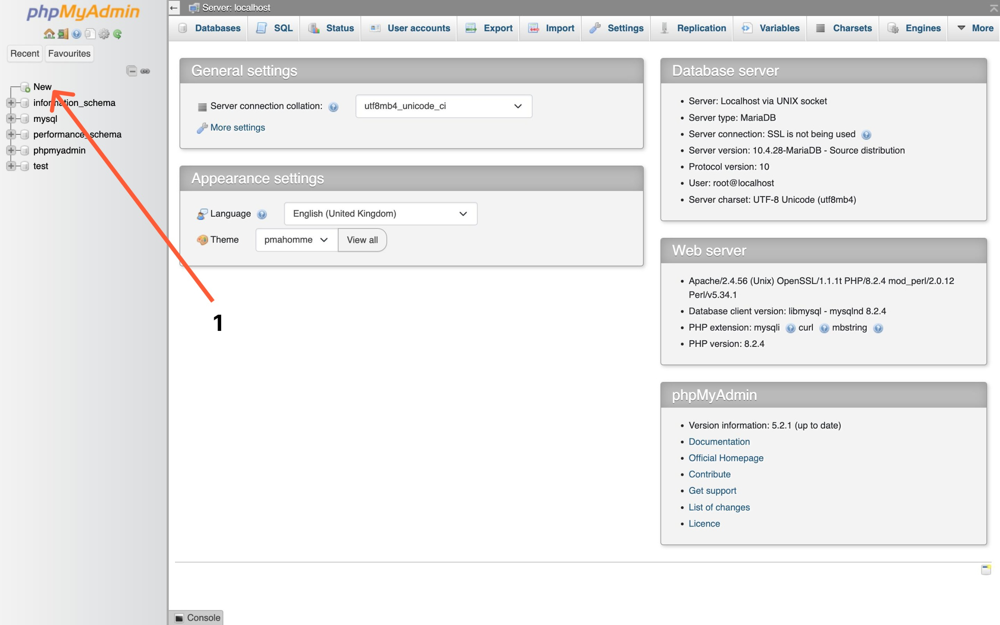
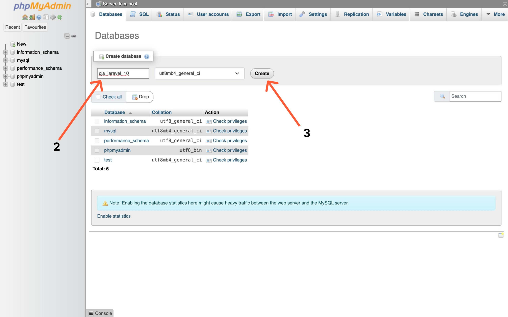

Head of Software Department HMTI
Membuat Model dan Migration
Selanjutnya kita akan belajar bagaimana cara membuar Model dan Migration di dalam Laravel
Model merupakan salah satu arsitektur / pola yang digunakan untuk membangun sebuah aplikasi, yaitu MVC atau Model, View, Controller. Model biasanya berisi kode-kode yang berhubungan dengan database. (cmiiw)
Sedangkan Migration merupakan version control dari database, dengan Migration kita bisa membuat schema table dan field dengan lebih mudah dibandingkan harus membuatnya manual di database.
Langkah 1 - Konfigurasi Koneksi Database
Hal pertama yang akan kita lakukan adalah mengatur koneksi dari aplikasi (Laravel) ke dalam database, di Laravel kita sudah di sediakan sebuah file konfigurasi untuk memudahkan developer atau pengembang, nama file tersebut .env.
Jadi, silahlan teman-teman buka project Laravel-nya menggunakan Text Editor, kemudian buka file .env dan cari kode berikut ini.
DB_DATABASE=laravel
DB_USERNAME=root
DB_PASSWORD=Kemudian silahkan ubah, menjadi seperti berikut ini.
DB_DATABASE=cja_laravel_10
DB_USERNAME=root
DB_PASSWORD=Pada perubahan kode di atas, kita mengubah DB_DATABASE menggunakan cja_laravel_10 dan untuk DB_PASSWORD silahkan disesuaikan dengan konfigurasi dari MySQL-nya masing masing, dikarenakan kita menggunakan XAMPP, maka dikosongkan saja (default)
Langkah 2 - Membuat Database di MySQL
Karena sudah berhasil melakukan konfigurasi di dalam Laravel, berarti kita lanjutkan membuat database-nya di dalam MySQL
Karena kita menggunakan XAMPP, maka kita menggunakan DBMS (Database Management System) seeprerti PhpMyAdmin untuk mempermudah kita dalam pembuatan database.
Silahkan buka http://localhost/phpmyadmin, kemudian silahkan buat database baru dengan nama cja_laravel_10, kurang lebih seperti berikut ini.
 Langkah 3 - Membuat Model dan Migration
Setelah Laravel dan database MySQL terhubung, maka bisa kita lanjutkan membuat Model dan Migration di dalam Laravel.
Silahkan jalankan perintah berikut ini di dalam terminak/CMD dan pastikan sudah berada di dalam project Laravel-nya.
php artisan make:model Post -mPerintah di atas, digunakan untuk membuat sebuah Model baru dengan nama Post dan jika teman-teman perhatikan, diatas kita menambahkan flagspan class="text-yellow-400 dark:text-red-600 bg-gray-600 dark:bg-black rounded-md px-2">-m yang artinya kita akan membuat file Migration-nya sekaligus.
Jika perintah diatas berhasil dijalankan, maka kita akan mendapatkan 2 file baru, yang berada di dalam folder :
- app/Models/Post.php
- database/migrations/2023_11_09_160153_create_ posts_table.php
INFORMASI : nama file Migration akan random sesuai dengan tanggal dibuat-nya
Langkah 4 - Menambahkan Field di dalam Migration
Hal apa yang perlu kita lakukan setelah membuat Model dan Migration di Laravel? jawaban-nya adalah menambahkan field atau kolom yang nanti ada di dalam file Migration.
Silahkan buka file migration-nya yang berada di dalam folder database/migrations/2023_11_09 _160153_create_posts_table.php, kemudian pada function up, ubah kode-nya menjadi seperti berikut ini
public function up(): void
{
Schema::create('posts', function (Blueprint $table) {
$table->id();
$table->string('image');
$table->string('title');
$table->text('content');
$table->timestamps();
});
}Dari perubahan kode di atas, kita menambahkan 3 field baru, yaitu :
| FIELD/COLUMN | TYPE DATA |
|---|---|
| image | string |
| title | string |
| content | text |